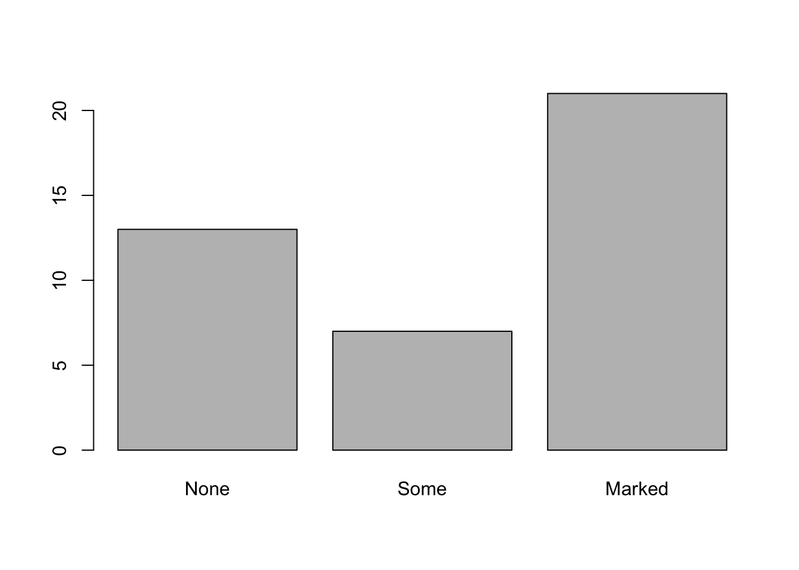
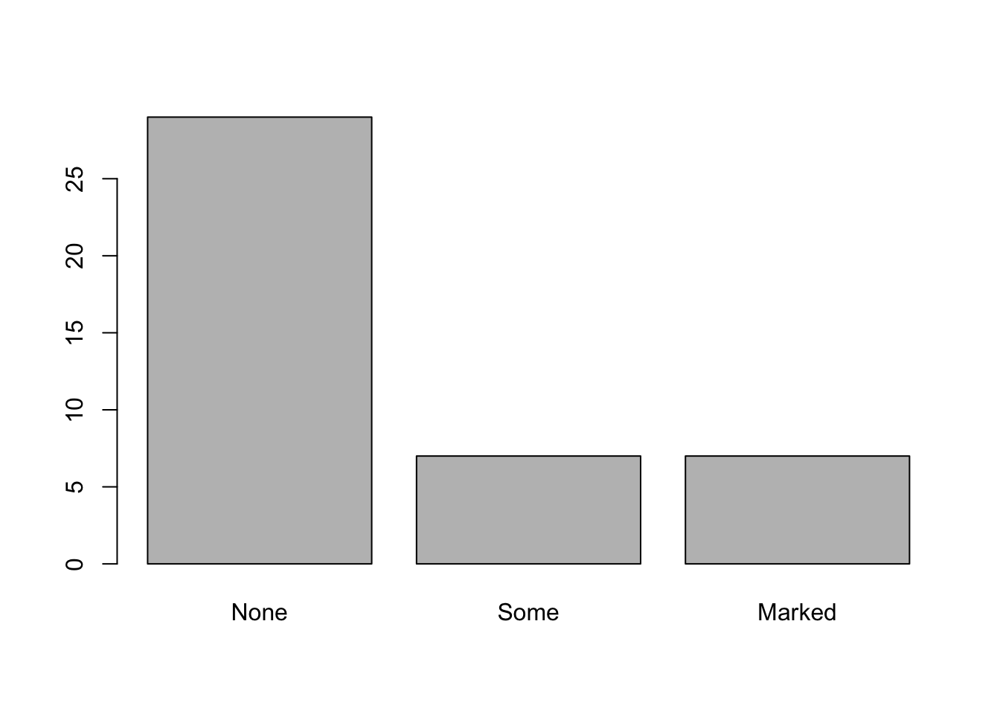
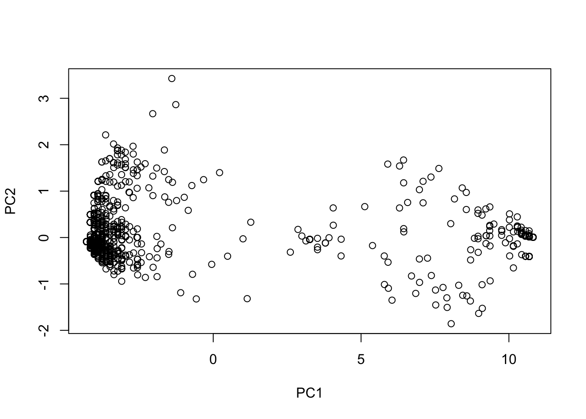

Week 9 Sex-biased gene flow
9.1 Multiple plots
Often it’s useful to look at multiple plots side by side. Today we’ll learn an easy way to do that. Once again, we’ll use the Arthritis dataset.
library(vcd)
data(Arthritis)
head(Arthritis)## ID Treatment Sex Age Improved
## 1 57 Treated Male 27 Some
## 2 46 Treated Male 29 None
## 3 77 Treated Male 30 None
## 4 17 Treated Male 32 Marked
## 5 36 Treated Male 46 Marked
## 6 23 Treated Male 58 Marked
Maybe we want to compare outcomes for the treated vs. placebo patients. We could plot each like this:
treated <- subset(Arthritis,Treatment=="Treated")
table.treated <- table(treated$Improved)
barplot(table.treated)
placebo <- subset(Arthritis,Treatment=="Placebo")
table.placebo <- table(placebo$Improved)
barplot(table.placebo)
To really compare the results, though, it might be most useful to look at these side-by-side. We can to that by altering the graphical parameters:
par(mfrow=c(1,2)) # 1 row and two columns of plots
barplot(table.treated,main="Treated")
barplot(table.placebo,main="Placebo")
Now we can see that there is clearly more “Marked” improvement in the treated patients.
9.2 Intro to this week’s data
Since you guys are all R experts now, this week you’ll use the documentation to figure out the analysis on your own. First, though, I’ll walk you through the data. We’re using the SNP data from the Portnoy et al. (2015) paper. There are two files:
portnoy_genotypes.vcf contains the genotypes for each individual portnoy_metadata.csv contains metadata for each individual
You’ll need three different libraries (two new):
install.packages("vcfR")
install.packages("hierfstat")library(vcfR)
library(hierfstat)
library(adegenet)
The SNP data for today is a VCF (Variant Call Format) file. This is a very common format for analyzing raw SNP data. Take a look at this file in a text editor. There’s a lot of extra information that we do not need for our SNP analysis. We can use the vcfR library to read that file in and convert it to the genind format (remember we used this format to calculate heterozygosity?). This is the format that the adegenet package likes.
v <- read.vcfR("data/portnoy_genotypes.vcf")## Scanning file to determine attributes.
## File attributes:
## meta lines: 64
## header_line: 65
## variant count: 5914
## column count: 129
##
Meta line 64 read in.
## All meta lines processed.
## gt matrix initialized.
## Character matrix gt created.
## Character matrix gt rows: 5914
## Character matrix gt cols: 129
## skip: 0
## nrows: 5914
## row_num: 0
##
Processed variant 1000
Processed variant 2000
Processed variant 3000
Processed variant 4000
Processed variant 5000
Processed variant: 5914
## All variants processedgen <- vcfR2genind(v)
gen## /// GENIND OBJECT /////////
##
## // 120 individuals; 5,914 loci; 11,838 alleles; size: 8.7 Mb
##
## // Basic content
## @tab: 120 x 11838 matrix of allele counts
## @loc.n.all: number of alleles per locus (range: 2-3)
## @loc.fac: locus factor for the 11838 columns of @tab
## @all.names: list of allele names for each locus
## @ploidy: ploidy of each individual (range: 2-2)
## @type: codom
## @call: adegenet::df2genind(X = t(x), sep = sep)
##
## // Optional content
## - empty -Let’s explore this file a little:
dim(gen$tab) # gen$tab is a matrix where each row is an individual## [1] 120 11838head(gen$tab[,1:10])## E881_L109_46.0 E881_L109_46.1 E881_L109_71.0 E881_L109_71.1 E897_L100_57.0 E897_L100_57.1
## AK_001 2 0 2 0 2 0
## AK_003 2 0 2 0 2 0
## AK_004 1 1 1 1 2 0
## AK_005 1 1 1 1 2 0
## AK_006 2 0 2 0 NA NA
## AK_007 1 1 1 1 1 1
## E1071_L100_38.0 E1071_L100_38.1 E1071_L100_61.0 E1071_L100_61.1
## AK_001 2 0 1 1
## AK_003 0 2 2 0
## AK_004 2 0 2 0
## AK_005 2 0 2 0
## AK_006 2 0 2 0
## AK_007 2 0 2 0rownames(gen$tab) #these are the sample names in order## [1] "AK_001" "AK_003" "AK_004" "AK_005" "AK_006" "AK_007" "AK_008" "AK_009" "AK_010" "AK_011"
## [11] "AK_012" "AK_013" "AK_014" "AK_015" "AK_016" "AK_017" "AK_018" "AK_019" "AK_020" "AK_021"
## [21] "AK_022" "AK_023" "AK_024" "AK_026" "AK_028" "AK_029" "AK_030" "AK_031" "AK_034" "AK_035"
## [31] "AK_036" "LK_001" "LK_003" "LK_005" "LK_006" "LK_008" "LK_009" "LK_010" "LK_011" "LK_012"
## [41] "LK_013" "LK_014" "LK_015" "LK_016" "LK_017" "LK_018" "LK_019" "LK_020" "LK_021" "LK_022"
## [51] "LK_023" "LK_024" "LK_025" "LK_026" "LK_027" "LK_028" "LK_029" "LK_030" "LK_031" "LK_032"
## [61] "LK_033" "LK_034" "NC_001" "NC_002" "NC_003" "NC_004" "NC_005" "NC_006" "NC_007" "NC_008"
## [71] "NC_010" "NC_011" "NC_013" "NC_014" "NC_015" "NC_016" "NC_017" "NC_018" "NC_019" "NC_022"
## [81] "NC_023" "NC_024" "NC_026" "NC_028" "PC_001" "PC_002" "PC_003" "PC_004" "PC_005" "PC_006"
## [91] "PC_007" "PC_008" "PC_009" "PC_010" "PC_011" "PC_012" "PC_013" "PC_014" "PC_015" "PC_016"
## [101] "PC_017" "PC_018" "PC_019" "PC_020" "PC_021" "PC_022" "PC_024" "PC_025" "PC_026" "PC_027"
## [111] "PC_028" "PC_029" "PC_030" "PC_031" "PC_032" "PC_036" "PC_037" "PC_038" "PC_039" "PC_040"
Now we can take a look at the metadata:
meta <- read.csv("data/portnoy_metadata.csv")
head(meta)## Sample_Name Collection.Date Location.Code Locality Sex
## 1 NC_001 10/27/00 NC North Carolina Unknown
## 2 NC_002 10/27/00 NC North Carolina Unknown
## 3 NC_003 10/27/00 NC North Carolina Unknown
## 4 NC_004 10/27/00 NC North Carolina Unknown
## 5 NC_005 10/27/00 NC North Carolina Unknown
## 6 NC_006 10/27/00 NC North Carolina UnknownThe first column is the sample names, but notice they are in a different order than in your genotype object. Other columns you might be interested in are “Locality” and “Sex”
##Documentation
The main package we will use for analysis is adegenet. Here is some helpful documentation.
Some helpful sections: 5.4 Measuring and testing population structure 6.2 Performing a Principal Component Analysis on genind objects
9.3 Homework
Use the data provided and the documentation to do the following:
9.3.1 Homework 8: Write a script that does the following:
Calculate Fst for males and females separately
Create a 2-panel figure with separate PCAs for males and females.